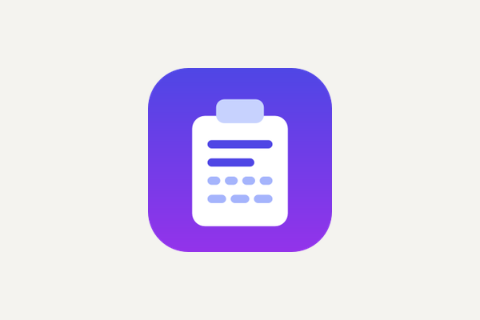
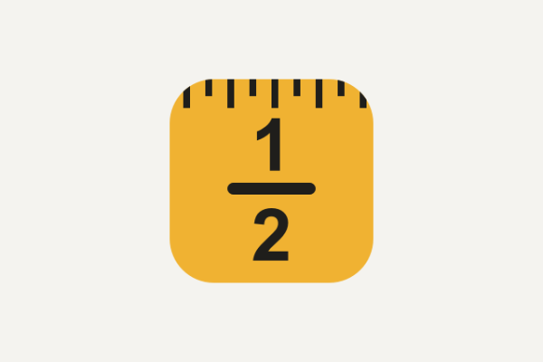
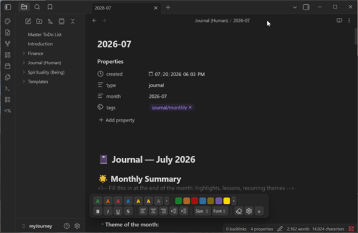
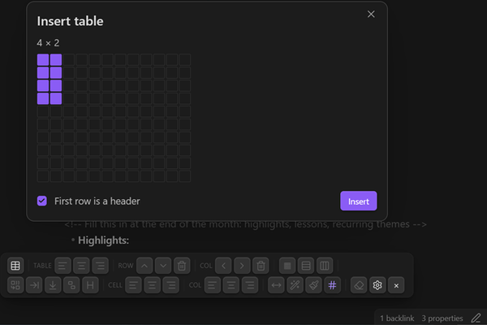
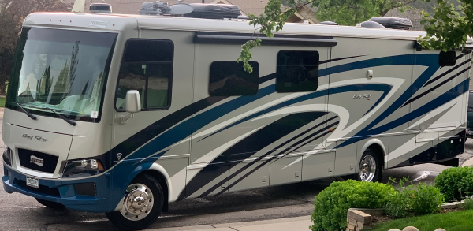

Every application we have released, free and open source, with live download counts.
Everything here is free, open source, and published under the MIT licence. There are no ads, no accounts, and no telemetry — the download numbers below come from GitHub's public release statistics, not from anything the apps report about you.

Desktop application · Windows and macOS · single file, no installation
Encrypt and decrypt text with a shared password, straight from the clipboard. A cloaked message is ordinary text, so it travels through any chat, email or note — and on Windows the app keeps the decrypted version out of clipboard history and cloud sync.
— downloads
Find Out More! Download Source
Desktop application · Windows and macOS · single file, no installation
A calculator that works the way a tape measure does: yards, feet, inches and fractions on an exact 1/32″ grid, added and subtracted without ever converting to decimals in your head.
Find Out More! Download Source
Obsidian plugin · in the official community directory
A floating, Word-like formatting toolbar for Obsidian notes: colors, highlights, sizes, fonts, alignment and a symbol picker — all merged into a single clean inline HTML span instead of nested wrappers.
— downloads
Find Out More! Install from the Directory Source
Obsidian plugin · in the official community directory · sister plugin to HTML Font Toolbar
A Word-style toolbar for real HTML tables in Obsidian: add rows and columns, merge and split cells, set header rows, align, control borders per row and per column, and shade individual cells — none of which a Markdown pipe table can do.
— downloads
Find Out More! Install from the Directory Source
Research project · in development, not yet released
Real-time object detection built into an RV backup camera, reporting what is behind the vehicle and how far away it is, so a large coach can be reversed into a camping spot with confidence.
Find Out More!Each count is a cumulative total since the app's first version, read when you open this page and remembered in your browser so it is not fetched again on every visit. Desktop applications are counted by GitHub: every download of a published release file, which leaves out copies of the source taken with the green Code button, since those are counted nowhere. The Obsidian plugins are counted by Obsidian, which is the honest number for a plugin — almost everyone installs it from the community directory, and GitHub never sees those. Obsidian publishes a fresh snapshot once a day, so that figure can sit up to a day behind the one on its directory page. A dash means the source could not be reached just now, not that the number is zero.